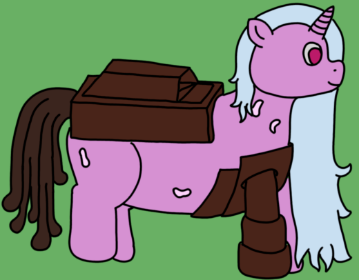

| Source | Surgical adjustment of a damaged Archon |
| Durability | 11/10 |
| Strength | Physical: 4/10 Psionic: 11/10 Magical: 2/10 |
| Specials | Mechanized puppet creation Surgical superiority Fabrication of modules |
| Personality | Variable; has difficulty conveying strong emotions |
Mechanized Archons are Archons who have being surgically altered by Serfs. They act as nexi for all Mechanized Puppets, producing the modules needed to equip such puppets and also spawning the puppets themselves. Their magical abilities are limited, but they trade this for greater awareness of the puppets around them as they adapt to the needs of their spawn.
Mechanized Archons aren't exactly subtle in their naming, given that their defining trait is the massive fabrication unit that makes up a majority of their barrel. This offsets much of the rest of their biology; their spawning orifice, for example is located in the leg, and they lack many of the redundant organs that large equid abominations have, making them one of the frailer Archon types despite their refined haetin machinery. To offset the weight of their fabricators, at least part of the front part of their barrels and one of their front legs are replaced with machined variants with counterweights.
While they can be assembled from any other Archon type, Mechanized Archons seldom reflect whatever type they came from, even growing a horn if they were previously a Gangrenous Archon before the surgery.
As Archons, Mechanized Archons primarily exist to increase the speed of growth of a puppet clan. However, compared to their peers, Mechanized Archons are particularly poor at this; they never spawn more than one puppet at a time (though they can still spawn quite frequently in stressful situations). They also possess the ability to control significant swathes of a puppet clan, and in fact seem to display a particular aptitude for coordinating extraordinarily large projects, which is typically owed to their greater psionic sensitivity.
Mechanized Archons have a very unusual specialty in the form of the large fabricator they carry in their bodies. This is a highly advanced piece of biotechnology, able to create refined Haetin directly from the archon's blood and form it into whatever the archon's puppets request for modules.
With a greater independence than normal puppets, Mechanized Archons can display a considerable variety of behaviour depending on the individual's temperament. While they do not display any particular behaviour, Mechanized Archons have a tendency towards neutrality, often appearing bored to outside observers. This is not a problem within the gestalt, as puppets and archons have a general impression of how all of their fellows are doing, but makes Mechanized Archons poorly suited to diplomatic work.
Mechanized Archons feature a strange variety of puppets, namely in that most puppet types are simplified and standardized to their sizes (Light, Heavy, or Superheavies), with only a couple puppets retaining unique features. Also included is the Division Analogue, which comes from an installable hangar module (seen below). The full list is as follows:
The defining trait of the Mechanized Archon is the modules it can fabricate for its puppets. Each module has a name, a slot size, and an effect, which can vary wildly from weapons, to puppet support, to more general utilities. A full list is below:
Mechanized Archons, due to their wide variety in backgrounds, can have a surprising variance despite all looking and acting quite similar as a caste of abomination. However, it is known that their biggest defining trait is their blood, which contains the extra compounds and internal magic to be able to be transmuted into refined Haetin entirely at the archon's behest, which enables their fabricators' incredible production speeds.
You'd think after enough times of seeing an archon be patched up into a Mechanized form, I'd get used to it, but... No, not at all. The surgeries do them well, and there's often no trace of their injuries. I don't even fully know if they remember. But... I remember. Every single one of them, whether they're born unwell or they came about some other way.
But, they soldier on. They all seem content with their modifications, and their ability to handle the others in considerable number while maintaining coordination. They can be a touch mute at times, but in a way, that's comforting in its own right. I do still feel responsible for them, however.
Mechanized Archons were actually the third Archon type, but they were decidedly "finished" first. I like them quite a bit; they play very heavily with the RTS theming while not stepping on the toes of Anchorages particularly heavily. Plus cyborgs, of course, kick ass. The decision to make the archons themselves more emotionally mute while their puppets tend towards outward cooperation and strong displays of companionship and sociality might be a bit strange, but I think it adds some flavourful contrast.
